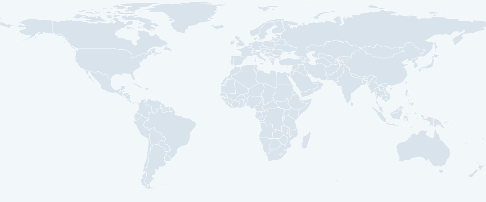

Research without borders
Collaborators
Discover the people and places connected through my research articles.
A WORLD OF CONNECTIONS
Connected through research.
Automatic updates: awaiting activation.

Choose a university above or select a map location to see coauthors and shared articles. Routes connect LSU to institution locations; they do not show travel.
People & publications
Explore a collaboration
Sources, coverage, and affiliation notes
This map covers five available articles, not the complete publication list. TopoX coauthors were transcribed from its PDF; institution associations are inferred from institutional email domains printed there. Other locations use affiliations explicitly stated in the linked manuscripts. Affiliations belong to the cited article versions and are not claims about nationality or current employment. Unresolved locations are listed below rather than guessed.
For TopoU-Net, Theodore Papamarkou is mapped to the stated NTUA affiliation; the additional PolyShape affiliation and Eric Frank’s Vinci4D location remain unassigned. GTBench names Texas A&M–Central Texas but gives College Station; the map uses the named institution’s Killeen campus. All coordinates are approximate.
TopoEmbedX and Beyond Flat Models appear on the LSU publication list, but their full affiliation records have not yet been mapped. India remains pending an article-linked affiliation. The splitting map uses the original manuscript’s affiliations; its revised title is available on arXiv.
Reviewed September 20, 2026. View Google Scholar profile ↗. Google Scholar blocked direct automated access during this update. Daily import files are included but require repository setup and an API secret. After activation, Scholar articles are imported automatically. New article connections use existing directory locations; these are not verified affiliations for the new article. Unknown or ambiguous names remain pending confirmation.
World outline: Natural Earth, public domain.